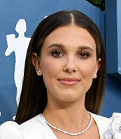
Millie Bobby Brown (Marbella, 19 de fevereiro de 2004) é uma atriz e cantora britânica nascida na Espanha. A atriz ganhou reconhecimento mundial e aclamação da crítica por seu papel como Onze na série de televisão Stranger Things da Netflix
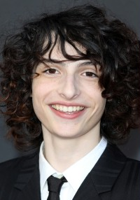
Wolfhard nasceu em Vancouver, Colúmbia Britânica, Canadá, em uma família com ascendência francesa, alemã e judaica. Ele estudou em uma escola católica.Nasceu em 23 de dezembro de 2002.
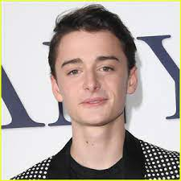
Noah Cameron Schnapp (Scarsdale, 3 de outubro de 2004) é um ator norte-americano, mais conhecido por interpretar Will Byers na série de televisão Stranger Things da Netflix e dar voz a Charlie Brown no filme The Peanuts Movie.
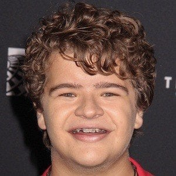
Gaten John Matarazzo III (Little Egg Harbor Township, 8 de setembro de 2002) é um ator norte-americano, mais conhecido por interpretar Dustin Henderson na série de televisão Stranger Things da Netflix.
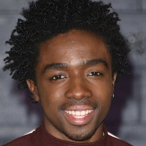
Caleb Reginald McLaughlin (nascido em 13 de outubro de 2001) é um ator americano. Ele é conhecido por interpretar Lucas Sinclair na série da Netflix Stranger Things , pela qual ganhou o Screen Actors Guild Award por Melhor Performance de Elenco em Série Dramática
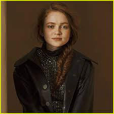
Sadie Elizabeth Sink é uma atriz norte-americana. É mais conhecida por interpretar Maxine "Max" Mayfield na série televisiva Stranger Things da Netflix. Ela também apareceu em episódios de Blue Bloods, The Americans e interpretou Ziggy Berman em Fear Street Part Two: 1978. Nasceu no dia 16 de abril de 2002 (idade 20 anos), Brenham, Texas, EUA.
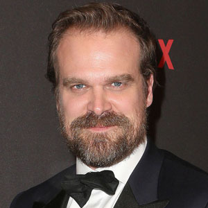
David Kenneth Harbour é um ator norte-americano. Ganhou reconhecimento por seu papel como Jim Hopper na série de drama e ficção científica Stranger Things, pelo qual ele recebeu um Prêmio Critics' Choice em 2018. Por este papel ele também recebeu indicações ao Emmy do Primetime e Globo de Ouro. Nsceu em 10 de abril de 1975 (idade 47 anos), White Plains, Nova York, EUA.
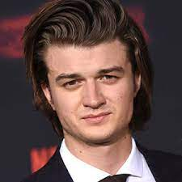
Joseph David Keery, mais conhecido como Joe Keery, é um ator norte-americano. É mais conhecido por interpretar Steve Harrington na série Stranger Things da Netflix. Nasceu em 24 de abril de 1992 (idade 30 anos), Newburyport, Massachusetts, EUA.
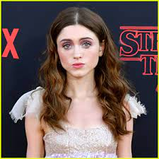
Natalia Danielle Dyer é uma atriz norte-americana, mais conhecida por interpretar Nancy Wheeler na série de televisão Stranger Things da Netflix. Nasceu em 13 de janeiro de 1995 (idade 27 anos), Nashville, Tennessee, EUA.

Winona Ryder é uma atriz norte-americana que ficou conhecida em 1988 por seu papel como Lydia de Os Fantasmas Se Divertem do diretor Tim Burton e seu trabalho mais atual é na série Stranger Things (2016-) como Joyce Byers. Nasceu em 29 de outubro de 1971 (idade 50 anos), Winona, Minnesota, EUA.
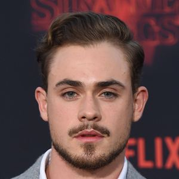
Dacre Montgomery é um ator australiano. É mais conhecido por interpretar Jason Scott no filme Power Rangers e Billy Hargrove na série Stranger Things. Nasceu em 22 de novembro de 1994 (idade 27 anos), Perth, Austrália.
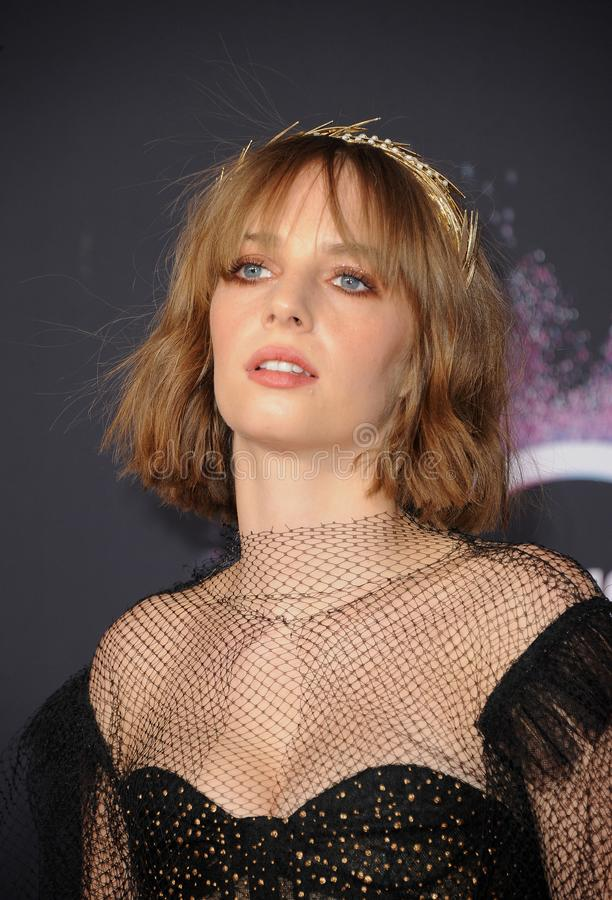
Maya Ray Thurman Hawke é uma atriz, modelo, cantora e compositora. norte-americana, filha de Uma Thurman e Ethan Hawke. É conhecida por interpretar Robin Buckley na série Stranger Things. Nasceu em 8 de julho de 1998 (idade 23 anos), Nova Iorque, Nova York, EUA.
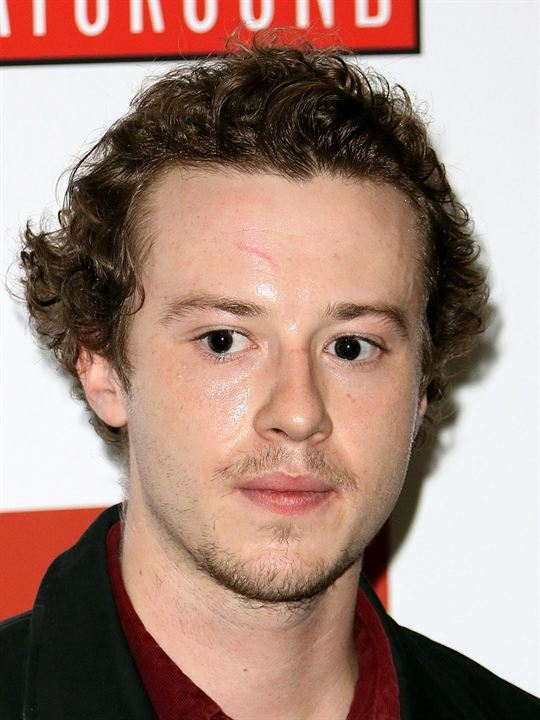
Joseph Quinn é um ator britânico. Ele interpretou Arthur Havisham na série de televisão Dickensian e Leonard Bast, um jovem bancário, na série de quatro partes de 2017 Howards End. Também em 2017, ele apareceu na série da HBO Game of Thrones na 7ª temporada como um soldado Stark, Koner. Nasceu em 15 de maio de 1993 (idade 29 anos), Inglaterra, Reino Unido.